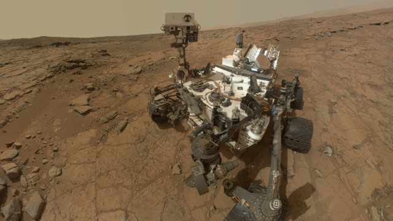

Curiosity
Curiosity's mission goal is to determine if Mars was ever able to support microbial life.
- Launched on Nov. 26th, 2011
- Landed on Aug. 6th, 2012
Major discoveries include finding chemical and mineral evidence of past habitable environments on Mars, as well as seeing Martian "Spiderwebs" up close.
The Curiosity Rover features a geology lab, rocker-bogie suspension, rock-vaporizing laser, and lots of cameras. It has an arm reach of about 7 feet, weighs 1,982 lbs, and is about the size of a small SUV, at 10 feet long, 9 feet wide, and 7 feet tall.